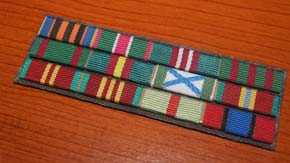
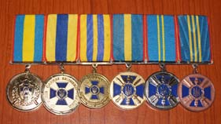
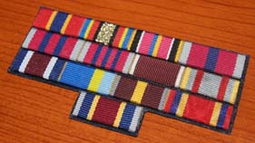
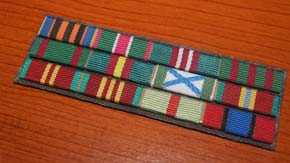
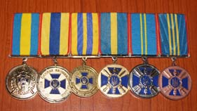
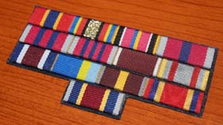

Відзнаки Пенітенціарної служби України
Відомчі заохочувальні відзнаки Державної пенітенціарної служби України.
I. Загальні положення
1.1. Цим Положенням визначається порядок відзначення відомчими заохочувальними відзнаками Державної пенітенціарної служби України осіб рядового і начальницького складу Державної кримінально-виконавчої служби України, спеціалістів, які не мають спеціальних звань, та інших працівників, які працюють за трудовими договорами в Державній кримінально-виконавчій службі України (далі - працівники кримінально-виконавчої служби), за сумлінне виконання службових обов’язків, пов’язаних з реалізацією державної політики у сфері виконання кримінальних покарань, а також відзначення професіоналізму, високих досягнень у службі, багаторічну та плідну працю зазначених осіб після виходу на пенсію.
1.2. До відомчих заохочувальних відзнак Державної пенітенціарної служби України (далі - відомчі відзнаки) належать:
- Подяка Державної пенітенціарної служби України;
- Грамота Державної пенітенціарної служби України;
- Почесна грамота Державної пенітенціарної служби України;
- Нагрудний знак "За відзнаку в службі";
- медаль "10 років сумлінної служби";
- медаль "15 років сумлінної служби";
- медаль "20 років сумлінної служби";
- медаль "Ветеран служби".
1.3. Подякою Державної пенітенціарної служби України нагороджуються особи рядового і начальницького складу Державної кримінально-виконавчої служби України за досягнення у службовій підготовці, особисту ініціативу, виявлену при виконанні службового обов’язку, працівники кримінально-виконавчої служби.
1.4. Грамотою Державної пенітенціарної служби України нагороджуються особи начальницького складу Державної кримінально-виконавчої служби України за високі показники при виконанні службового обов’язку, професіоналізм та працівники кримінально-виконавчої служби за зразкове виконання посадових обов'язків і плідну працю.
1.5. Почесною грамотою Державної пенітенціарної служби України нагороджуються особи начальницького складу Державної кримінально-виконавчої служби України за багаторічну й бездоганну службу при виконанні службового обов’язку, особисту ініціативу і самовідданість, працівники кримінально-виконавчої служби за зразкове виконання посадових обов'язків, багаторічну і плідну працю.
1.6. Нагрудним знаком "За відзнаку в службі" нагороджуються особи рядового і начальницького складу Державної кримінально-виконавчої служби України за високі показники, сміливі та самовіддані дії при виконанні службових обов’язків.
1.7. Медалями "10 років сумлінної служби", "15 років сумлінної служби", "20 років сумлінної служби" нагороджуються особи начальницького складу Державної кримінально-виконавчої служби України, які сумлінно ставляться до виконання службових обов’язків і мають вислугу років у календарному обчисленні:
"10 років сумлінної служби" - 10 років;
"15 років сумлінної служби" - 15 років;
"20 років сумлінної служби" - 20 років;
Повторне нагородження медалями не здійснюється.
До вислуги років зараховуються періоди служби, які враховуються для призначення пенсій за вислугу років відповідно до Порядку обчислення стажу служби для виплати надбавки за вислугу років особам рядового і начальницького складу Державної кримінально-виконавчої служби України, затвердженого наказом Міністерства юстиції України від 10 вересня 2012 року № 1341/5, зареєстрованого в Міністерстві юстиції 11 вересня 2012 року за № 1564/21876 (із змінами).
1.8. Медаллю "Ветеран служби" нагороджуються особи начальницького складу Державної кримінально-виконавчої служби України, які мають вислугу 25 років і більше у календарному обчисленні, за багаторічну бездоганну службу, пов’язану з реалізацією державної політики у сфері виконання кримінальних покарань, а також відзначення професіоналізму, високих досягнень у службі.
1.9. Особи, зазначені в пунктах 1.3 - 1.5 та 1.7 цього Положення, можуть нагороджуватися відповідними відомчими відзнаками також після виходу на пенсію.
1.10. Гранична кількість нагороджених відомчими відзнаками протягом календарного року не може перевищувати:
Подякою Державної пенітенціарної служби України - 500;
Грамотою Державної пенітенціарної служби України - 500;
Почесною грамотою Державної пенітенціарної служби України - 500;
нагрудним знаком "За відзнаку в службі" - 500;
медаллю "10 років сумлінної служби" - 5000;
медаллю "15 років сумлінної служби" - 3000;
медаллю "20 років сумлінної служби" - 1000;
медаллю "Ветеран служби" - 500.
II. Порядок представлення до нагородження відомчими відзнаками
2.1. Висунення кандидатур для нагородження відомчими відзнаками здійснюється заступниками Голови Державної пенітенціарної служби, начальниками структурних підрозділів апарату Державної пенітенціарної служби, начальниками управлінь (відділів) Державної пенітенціарної служби в Автономній Республіці Крим та місті Севастополі, областях, місті Києві та Київській області, установ виконання покарань та слідчих ізоляторів, де проходять службу (працюють) особи, які висуваються на заохочення, керівниками навчальних закладів, що належать до сфери управління Державної пенітенціарної служби (далі - особа, яка порушила клопотання про нагородження).
2.2. Стосовно особи, яка висувається на нагородження, складається нагородний лист за формою згідно з додатком 1 до цього Положення у двох примірниках, у якому зазначаються досягнення в службовій діяльності, які є підставою для нагородження.
Нагородний лист підписується посадовою особою, яка ініціювала нагородження, та подається до кадрової служби апарату Державної пенітенціарної служби.
Нагородний лист, що надсилається до Державної пенітенціарної служби, скріплюється гербовою печаткою та надсилається для погодження до територіального органу управління Державної пенітенціарної служби та до кадрової служби апарату Державної пенітенціарної служби.
Перший примірник нагородного листа подається кадровою службою апарату Державної пенітенціарної служби на розгляд керівника Державної пенітенціарної служби. Другий примірник нагородного листа залишається на зберіганні в кадровій службі територіального органу управління Державної пенітенціарної служби чи навчального закладу, що належить до сфери управління Державної пенітенціарної служби.
2.3. При недотриманні порядку представлення до нагородження надіслані до кадрової служби апарату Державної пенітенціарної служби матеріали щодо заохочення відомчими відзнаками не розглядаються.
III. Порядок вручення та носіння відомчих відзнак
3.1. Вручення відомчої відзнаки здійснюється в урочистій обстановці Головою Державної пенітенціарної служби або за його дорученням особою, яка порушила клопотання про нагородження.
Особі, нагородженій нагрудним знаком чи медаллю, разом з відзнакою вручається посвідчення встановленого зразка.
Про факт нагородження відомчою відзнакою робиться відповідний запис в особовій справі нагородженої особи.
3.2. У разі нагородження особи посмертно відомча відзнака та документ, що посвідчує нагородження нею, передаються сім’ї нагородженої особи.
3.3. Повторне нагородження відомчими відзнаками, зазначеними в пунктах 1.3 - 1.5 цього Положення, протягом одного року не здійснюється.
3.4. У разі втрати (псування) відомчої відзнаки або посвідчення до неї дублікати не видаються.
3.5. Про вручення нагородженій особі відомчої відзнаки складається протокол вручення відомчої заохочувальної відзнаки за формою згідно з додатком 2 до цього Положення.
Протокол підписується посадовою особою, яка вручила відзнаку, та скріплюється гербовою печаткою відповідного територіального органу управління Державної пенітенціарної служби, установи виконання покарань та слідчого ізолятора, навчального закладу, що належить до сфери управління Державної пенітенціарної служби, та надсилається до кадрової служби апарату Державної пенітенціарної служби не пізніше ніж через тиждень після вручення відзнаки і зберігається у відповідних справах.
3.6. Відомчі відзнаки і посвідчення до них після смерті нагородженої особи залишаються в її родині.
3.7. Позбавлення відомчої відзнаки у разі засудження нагородженої особи за скоєння злочину згідно з вироком суду, який набрав законної сили, оформлюється наказом Голови Державної пенітенціарної служби за відповідним поданням.
3.8. Відомча відзнака у вигляді медалі носиться з лівого боку грудей і розміщується після знаків державних нагород України та іноземних державних нагород. За наявності в особи кількох медалей, зазначених у пункті 1.2 розділу І цього Положення, носиться лише та, що була вручена останньою.
3.9. Замість нагрудного знака та медалей нагороджена особа має право носити планки до них, які розміщуються після планок державних нагород України, іноземних державних нагород.
3.10. Відомчі відзнаки у вигляді нагрудних знаків носяться з правого боку грудей і розміщуються нижче знаків державних нагород України, іноземних державних нагород.